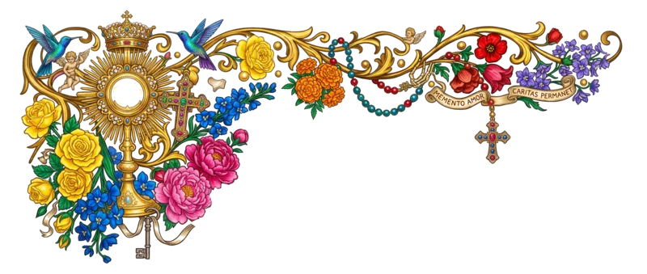

A new install today lands on Today with an empty plan, and reminders only exist for plan practices: someone who never builds a plan gets no notifications. Each direction below aims for the same three results in the first minutes: a real plan (a tradition adopted, not an empty card), notifications allowed (asked for with a concrete promise, never cold), and one look at the app's depth (the liturgical day it already knows). They differ in how much the flow interrupts Today. Drawn on Monday 9 November 2026 with the corpus's real templates, times and holy cards.
Five full-screen pages, swiped sideways like turning leaves. It asks the most, and it is the only direction where a new user meets the Mass-form and Office questions before seeing anything.

Rezar com a Igreja,
um dia de cada vez.
O plano de vida, a Missa e o Ofício do dia, os santos e uma biblioteca de dois mil anos.
Tudo isto muda depois em Ajustes.
Um plano de vida é uma regra pequena, rezada todo dia.
VER AS 16 TRADIÇÕES →
Toque num horário para mudá-lo. O sino lembra na hora.
A Missa, as leituras e o Ofício de cada dia já estão aqui. Este santinho é o primeiro da sua coleção.
Próxima oração: Angelus, às 12:00
Today opens as it does now, and a sheet rises over it on first launch. The real page stays visible behind it, so the welcome is the app itself. Swiping the sheet down skips; the plan question is the only one asked. Mass form and the Office stay with their defaults and are offered later (see C3).
Escolha um plano de vida. O Ember põe cada oração na hora e lembra você.
E o Terço, o Evangelho e a Missa de domingo, para os dias de ir além, sem lembrete.
Lembretes do seu plano de vida, na hora de cada oração.
Seu plano começa hoje.
No flow at all. The empty plan card becomes the invitation, notifications are asked for right after the first prayer is finished, and for a week one card a day shows something the user hasn't opened yet. The lightest touch. Useful alongside A or B, not only instead of them.
Um oferecimento ao amanhecer, o Angelus ao meio-dia e às seis, um exame à noite. Cinco minutos por dia.
…cheguemos por sua paixão e sua cruz à glória da ressurreição. Pelo mesmo Cristo, Senhor nosso.
4 · A Liturgia das Horas · 5 · A Missa em latim e português · 6 · A Bíblia em grego e hebraico · 7 · Novenas do ano
B with C2 and C3. The sheet asks the one question that fixes retention (a plan) without hiding the app behind five pages. Notifications are requested over the list they serve, and asked again after the first prayer if refused. The week of discovery cards then brings out the depth. A's Mass-form and Office questions become two of those discovery cards ("Do you go to the Traditional Mass?") instead of hurdles before day one. Kept from A: A5's "today the Church celebrates" holy card, as the moment the sheet settles.